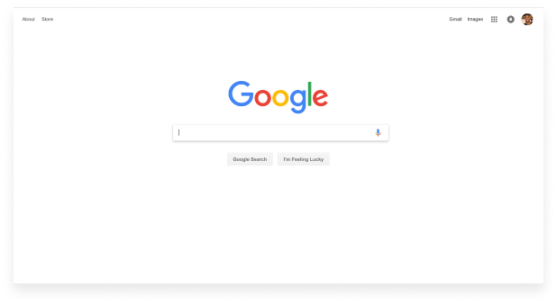
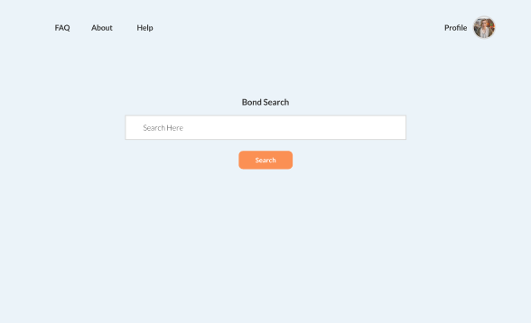

Back
Back
Title
Goldman Sachs
Overview
Google-esque search functionality to save precious seconds in high intensity bond trading.
Problem
Corporate bond traders require more seconds to execute high-speed trades.
In day-to-day client conversations, Goldman's bond traders have a mass of information they want to manage. It's very time-consuming to sift through all the of the bond data, so the traders needed a way to reduce the repetitiveness of many of their tasks.
Solution
Present volatile bonds in a real-time web application, so that traders can find key information right away.
In day-to-day client conversations, Goldman's bond traders have a mass of information they want to manage. It's very time-consuming to sift through all the of the bond data, so the traders needed a way to reduce the repetitiveness of many of their tasks.
Process
How do we allow traders to find bonds quickly?
This required three phases: -Performing behaviorial interviews with each of the traders to understand behavior and pain points, as well as mapping out their journey from start to making a trade. -Rapidly prototype different solutions to present to traders. -Develop web-application by consolidating data points, taking feedback every step of the way.
UX Research
Here are some of the main points of concern I found that traders faced.
Search
Most of the time, the trader knows the bond they are looking for beforehand. Therefore, search functionality made the most logical sense.
Inspired by Google, I took a page out of their book to implement a design that was already familiar with traders.
 Outcome
Real-time web application to break down complex bond insights into simple and digestable UIs.
Due to non-discolusure agreements with Goldman Sachs, I am limited in showing the rest of the web application and mockups, as they contain sensitive information and architecture.
This is the end of the page, I sincerely appreciate you for taking out time to look through my work
Title
Goldman Sachs
Role
UX Designer and Researcher
Disclaimer
Due to non-disclosure agreements, I am limited in the amount of work I can show.